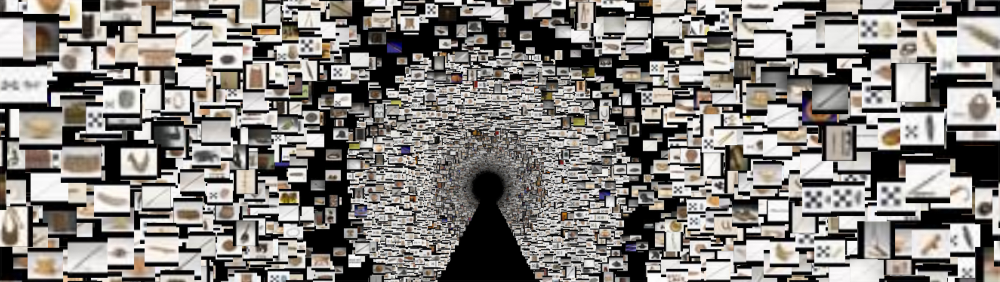
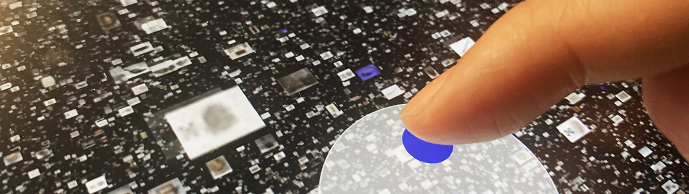
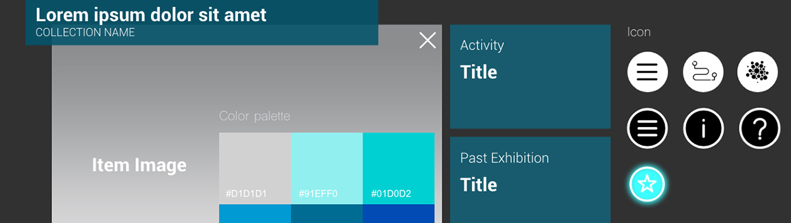
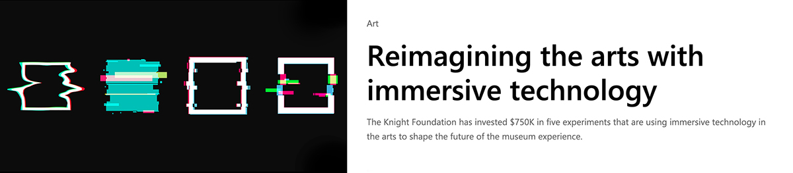
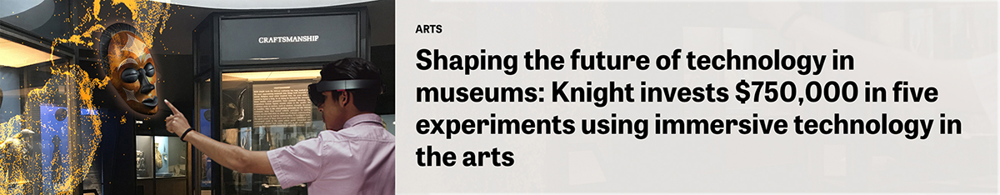

Collectionscope is an open source software engine for visualizing museum collections across time and space.
Collectionscope collects, processes, and transforms collections metadata into digital information that can be visualized and explored on multiple platforms, including immersive 3D environments.
Plotting this data across time and space provides engaging access to entire collections and the objects within, as well as the opportunity to dive into rich and complex institutional histories.
Built with open source tools and libraries, the engine is freely available to other cultural institutions to visualize their own collections and develop experiences that suit their unique learning goals and audiences.
Highlight Demo
Features
-
Visualize
Map 100,000s of objects in 3D space with configurable layouts
-
Multi-platform support
Interact with mouse and keyboard or touch with experimental support for mixed reality
-
Simple configuration
Create your visualization from a comma-separated values (CSV) file
-
Customizable
With story template, add context and interpretation and showcase 3D objects, audio, and external links
-
Open source
Collectionscope is an open source tool free to use and adapt
Examples
Explore some examples of using this tool with difference open access collections
Documentation
-


-
Access the codebase on GitHub and start building your own Collectionscope project.
Read more
-

Microsoft press release
Reimagining the arts with immersive technology -

Knight Foundation press release
Shaping the future of technology in museums